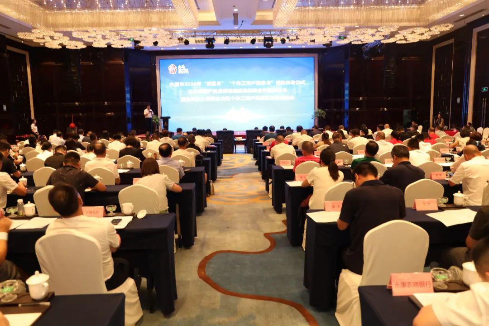
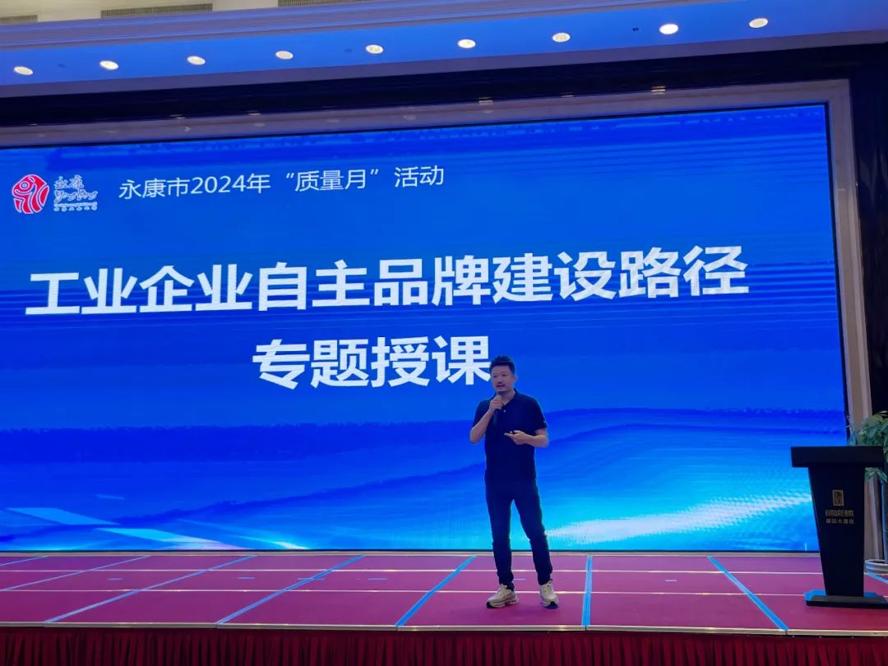
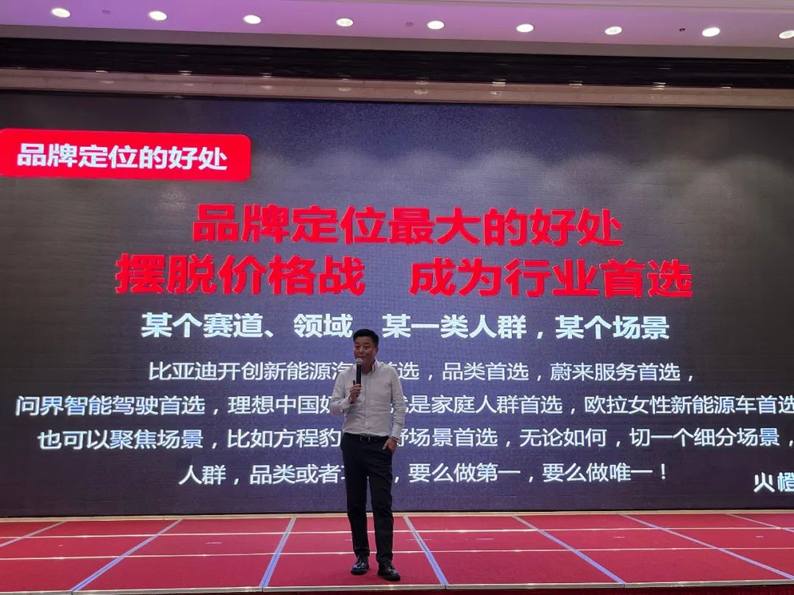
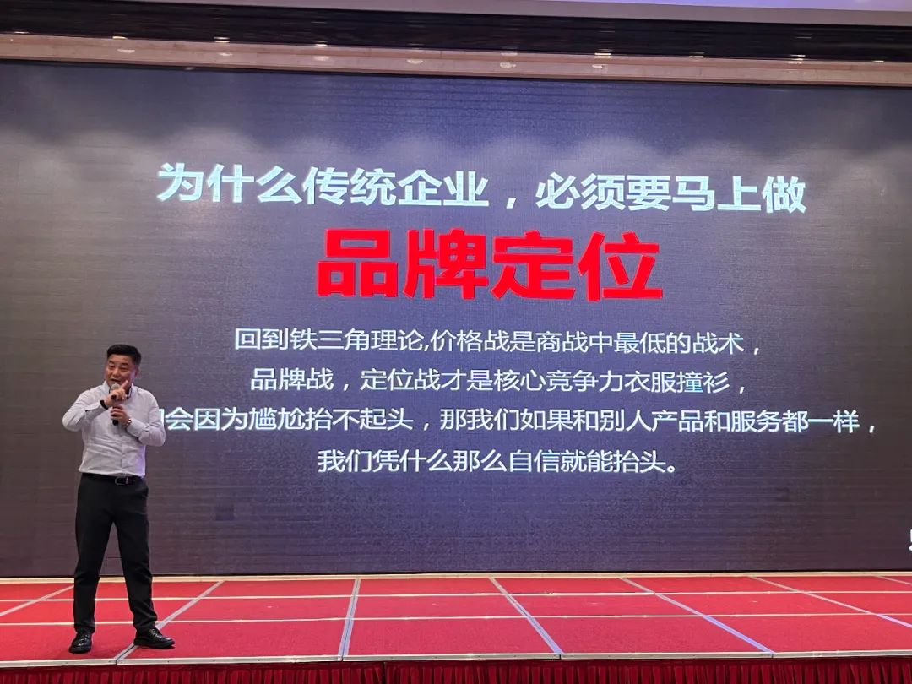
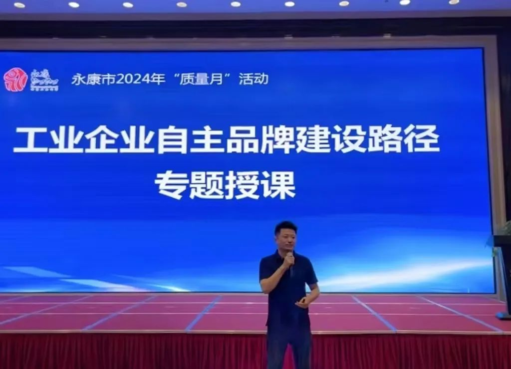

2024年9月3日，永康市2024年度“质量月”活动启动暨首席品牌官工作站成立仪式在浙江永康举行。金华市市场监督管理局领导、永康市副市长、市场监督管理局领导、质量发展委员会相关成员单位分管领导、品牌办分管负责人、以及金华市品牌建设发展联盟永康成员企业、永康市品牌建设促进会成员单位、“品字标”、各级政府质量奖企业品牌建设负责人等约200人参会。

XX战略咨询董事长徐超、XX战略咨询管理合伙人蔡玉峰受邀出席会议，就工业企业自主品牌建设路径与案例分析做专题授课。
当天课程内容涵盖品牌国策与法律法规、工业企业自主品牌建设路径与案例分析等，从企业现实需求出发，并为企业家们提供现场指导与答疑解惑。

XX战略咨询董事长 徐超

XX战略咨询管理合伙人 蔡玉峰
会议上，XX战略咨询管理合伙人蔡玉峰首先为在场的民营企业家们厘清了民营企业的竞争现状与挑战，让大家深刻理解了“传统企业做品牌的必要性”。
他提到，民营企业想要摆脱价格战，谋求长期稳定发展，最好的方法就是通过品牌定位成为顾客心智首选，不要在大海里钓小鱼，要在小池塘里钓大鱼。这样一步步建立起自身的价格护城河，还能有效降低传播成本。

XX战略咨询管理合伙人 蔡玉峰
随后，XX战略咨询董事长徐超为在场正处于不同发展阶段的企业家们提供了一个全面、实用的商业定位指南。并且用多个实战案例，帮助大家直观感受到将“一流的战略定位”与“一流的落地执行”组合起来的打法，在如今的商业竞争中会发挥多大的威力。
他表示，民营企业家们建设品牌，一定要找准一个从用户心智出发的定位，以此来驱动战略、围绕这个定位组织和分配企业所有资源，这样才能使企业获得一种前所未有的竞争优势。

XX战略咨询董事长 徐超
总之，在如今的商业大环境下，民营企业如果长久囿于价格战，想方设法通过降低成本来盈利，想“把干毛巾拧出水来”，这样的做法在如今的同质化竞争路线上已经不堪重负。而解决同质化竞争的办法就是打造品牌，打造品牌的心法就是以独具特色的运营活动在顾客认知中占据一个定位。
XX以“定位与落地”双管齐下的品牌建设战略，已为国内多家企业的可持续、高质量发展带来强效助推力，此次亮相永康市“质量月”活动，以XX自身经验与知识的分享，帮助更多中国企业破解发展难题，构建强大的品牌力以驱动企业的长期增长发展。